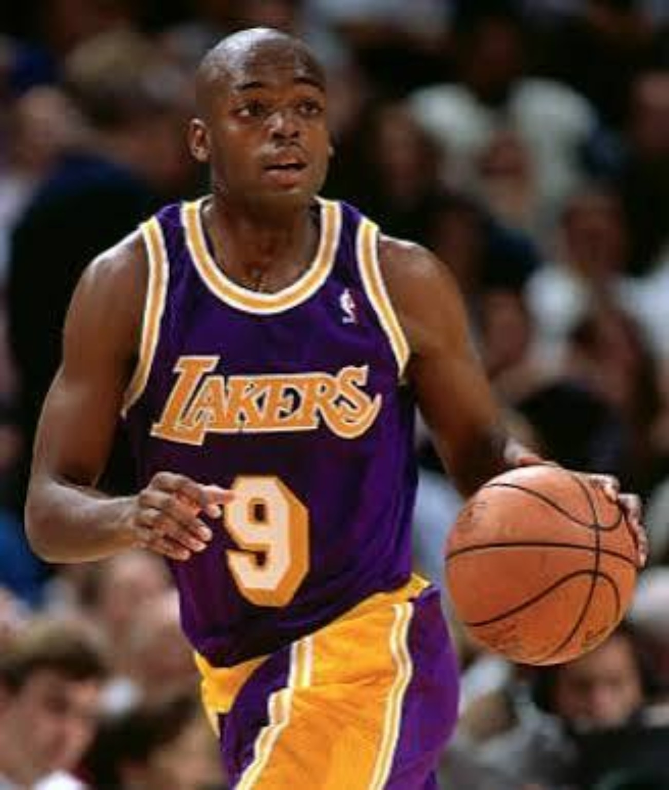
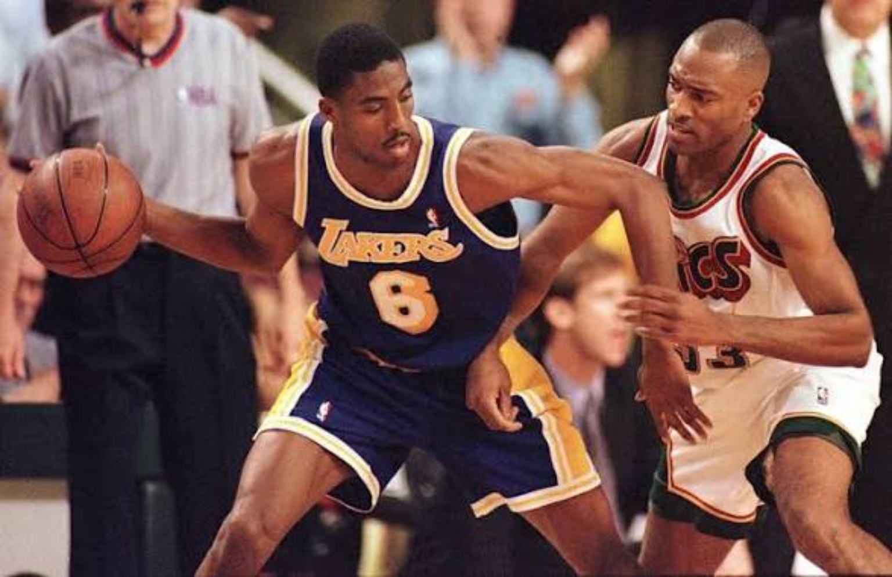
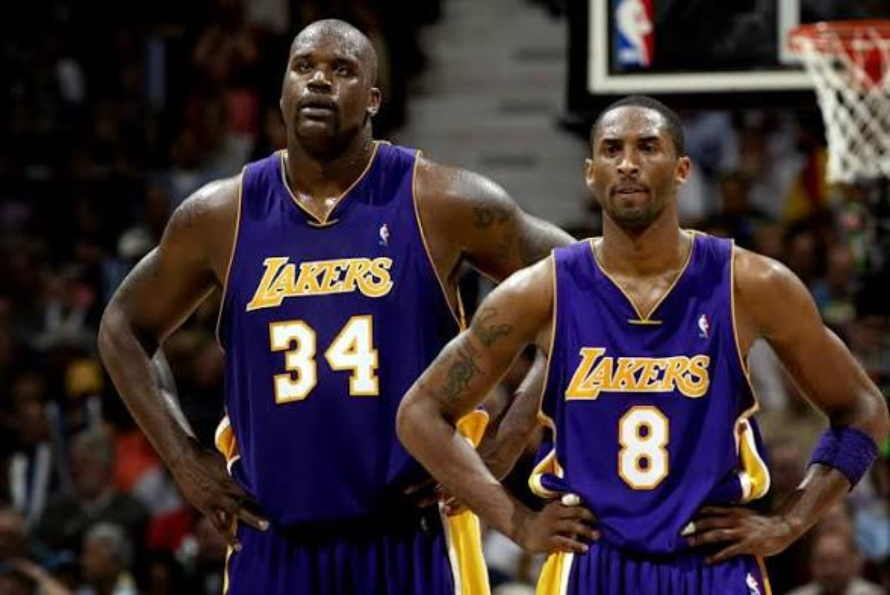
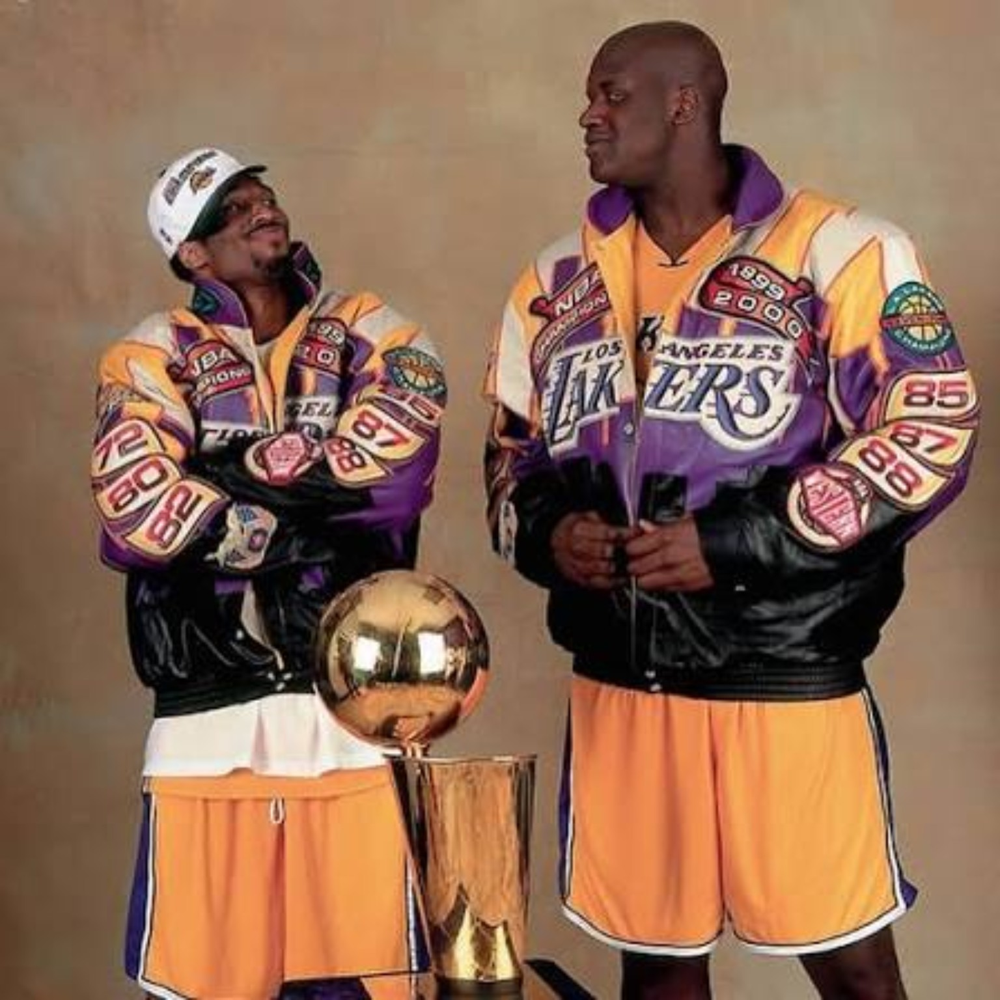
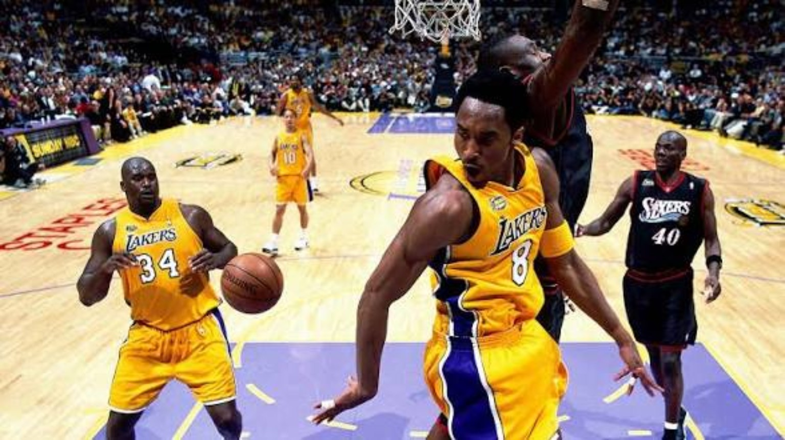
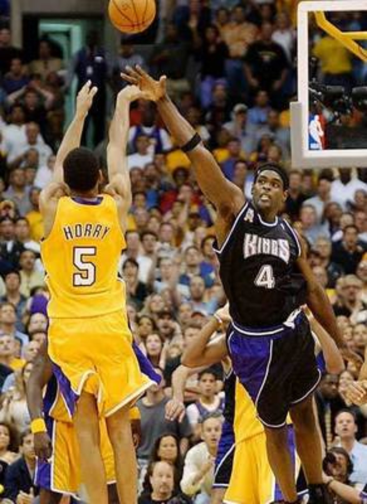

The ending was ugly. The relationship was complicated. None of that should erase how great the partnership was at its best.
01. BEFORE THE DYNASTY, THERE WAS A CONTENDER.
Nobody knew in the summer of 1996 that the Lakers had just assembled a dynasty. Shaquille O'Neal was the sure thing. Kobe Bryant was the mystery.
That distinction matters. The first version of these Lakers was not built around a fully formed superstar duo. It was a deep young contender that already had Nick Van Exel and Eddie Jones in the backcourt, Cedric Ceballos at the beginning of the year, Elden Campbell up front and, after an in-season trade, Robert Horry. Shaq gave the entire operation a championship ceiling immediately.
Los Angeles won 56 games in 1996–97 even though O'Neal played only 51. Kobe, still 18, came off the bench and flashed the nerve and athleticism that would eventually change the team's hierarchy. The famous Utah airballs came in the playoffs, but the important part was that the teenager was willing to take those shots at all.

02. THE KID WITH THE FRO STARTED CLOSING THE GAP.
The 1997–98 season was the first time you could feel the future pressing against the present. Kobe was still a sixth man for the Lakers, but at 19 he made the All-Star team and started getting real minutes in important games. The flashes from his rookie season were becoming stretches. The talent was becoming production.
That is also when Eddie Jones had to start looking over his shoulder. Jones was not some placeholder. He was an All-Star-caliber two-way guard, long, athletic, explosive and already established as one of the league's better perimeter defenders. Kobe and Eddie even shared some physical similarities: both around 6-foot-6, lanky, fast and capable of playing above the rim.
But Kobe was six years younger. By the end of 1997–98, the gap had closed enough that the Lakers could see the direction of the franchise. After Van Exel was moved in the 1998 offseason, the Lakers experimented with Kobe and Eddie together. Then, during the lockout-shortened 1998–99 season, Jones and Campbell were traded to Charlotte for Glen Rice and other pieces. The runway was officially clear.

That 1999 season never felt settled. Del Harris was fired. Kurt Rambis took over. Veteran Derek Harper handled much of the point guard job. Rice needed time to get comfortable. It was the last season at the Forum. Shaq was still Shaq at 26.3 points and 10.7 rebounds, while 20-year-old Kobe averaged 19.9 points and 5.3 rebounds and made All-NBA Third Team. The Lakers had talent. They just did not have championship order yet.
03. PHIL JACKSON CHANGED THE TEMPERATURE.
Then came Phil.
Jackson brought the triangle offense, discipline and something the Lakers' young stars still needed: a championship culture. The franchise had stars. Phil brought a system for teaching stars how to win.
The timing was perfect. Shaq was entering his absolute prime and produced the best season of his career: 29.7 points, 13.6 rebounds, 3.8 assists, league MVP and the centerpiece of the NBA's best defense. He missed only three games. Kobe, 21, was coming into his own at 22.5 points, 6.3 rebounds and 4.9 assists.

And the veterans mattered. Glen Rice gave them a real third scorer at 15.9 points per game. Ron Harper already understood Jackson from Chicago. Brian Shaw had history with Shaq in Orlando. A.C. Green brought championship experience. Horry and Rick Fox gave the Lakers toughness, versatility and postseason composure. Derek Fisher kept growing into a guard Jackson could trust.
The result was 67–15, a new building at STAPLES Center, a refreshed look and a regular season that felt like the opening of a new era. But none of that meant they were champions yet.
KOBE'S ARRIVAL.
PHIL'S VALIDATION.
04. PORTLAND WAS THE DOOR.
The 2000 Western Conference Finals is the series that deserves more respect in the Shaq–Kobe story. Portland was not some overmatched obstacle. The Blazers were deep, experienced and built to attack the Lakers' weaknesses with Rasheed Wallace, Scottie Pippen, Steve Smith, Arvydas Sabonis, Damon Stoudamire, Bonzi Wells and Brian Grant.
Wallace was a nightmare matchup. Too athletic for A.C. Green, too strong for Horry, too quick for Shaq. Smith punished the Lakers throughout Game 7. Pippen gave Portland the same kind of championship credibility that Phil had brought to Los Angeles.
And the Lakers nearly blew it. They went up 3–1, lost Games 5 and 6 and then trailed by 16 late in the third quarter of Game 7. Brian Shaw's desperation banked three at the horn cut the lead to 13. Portland still went back up 15 early in the fourth — and then the entire series flipped.
The Blazers went cold. The Lakers turned up the defense. Shaw hit more threes. Kobe attacked. Shaq finally found daylight. The defining image came with 41 seconds left: Kobe drove, lifted a lob and Shaq finished it above the rim.
05. SHAQ'S CORONATION. KOBE'S COMING-OUT GAME.
The 2000 Finals belonged to Shaquille O'Neal. There is no need to soften it. Shaq averaged roughly 38 points and 17 rebounds against Indiana and capped an MVP season by becoming Finals MVP. At that moment, he was not just the best center in basketball. He had a real case as the most dominant center the league had ever seen at his peak.
But Game 4 was Kobe's announcement.
He was 21, playing on a sprained ankle, coming off missed time earlier in the series. Shaq fouled out in overtime. The Lakers needed somebody to close. Kobe did it — three straight late baskets, 28 points in 47 minutes and a 3–1 series lead.
That was the night Kobe stopped looking like merely the brilliant young guard next to Shaq. It was the first championship-stage glimpse of the player he was becoming: clutch, stubborn, poised and completely comfortable with pressure.
2000 was Shaq's coronation and Kobe's arrival. It was also proof of why Phil Jackson had been brought to Los Angeles in the first place.

06. 2001: WHEN THE DUO BECAME UNFAIR.
If one season defines the Shaq–Kobe partnership, it is 2000–01.
There were tensions during the regular season over roles, touches and who exactly was No. 1. Shaq was already established as the league's dominant force. Kobe, at 22, was no longer comfortable being described as a sidekick — and his game justified the ambition. Bryant averaged 28.5 points, 5.9 rebounds and 5.0 assists. Shaq averaged 28.7 points and 12.7 rebounds.
That regular-season friction is part of what makes the playoffs so remarkable. Once the postseason began, the two stars stopped looking like players competing for the same spotlight and started looking like two different weapons destroying the same defense.

Portland got swept. Sacramento got swept. San Antonio got swept. Los Angeles entered the Finals 11–0. Allen Iverson's 48-point Game 1 remains one of the iconic performances in NBA history, but the Sixers' win only delayed the inevitable. The Lakers won the next four.
That run is the cleanest explanation of why the pairing was so unfair once Kobe reached superstar status. Shaq could destroy a defense in the paint. Kobe could beat a defender one-on-one from anywhere. Load up on one and the other could punish you.
07. 2002: THE DYNASTY HAD TO SURVIVE.
The 2001 Lakers looked untouchable. The 2002 Lakers had to survive.
Los Angeles still won 58 games, swept Portland in the first round and beat Tim Duncan's Spurs in five. But Sacramento was ready. The 61-win Kings had Chris Webber, Peja Stojaković, Mike Bibby, Vlade Divac, Bobby Jackson, Doug Christie and Hedo Türkoğlu. They had spent two postseasons getting educated by the Lakers. This time they had the No. 1 seed and enough talent to take the crown.
Game 4 delivered the Horry shot — a loose ball kicked out beyond the arc, Horry waiting at the top, three at the horn. Without it, Sacramento goes up 3–1 and the entire dynasty can read differently.

Game 6 remains one of the most debated officiating games in playoff history. Then came Game 7 in Sacramento, an overtime classic. Shaq went for 35 and 13. Kobe scored 30 with 10 rebounds and 7 assists. Horry and Fox played massive minutes. The Lakers won 112–106 and went on to sweep New Jersey.
Three straight championships. Dynasty confirmed.
08. 2003: THE GEARS STARTED SHIFTING.
The first real signs of mortality came immediately. Shaq's toe surgery and delayed return disrupted the start of the 2002–03 season, and the Lakers opened 11–19. The three-peat champions were suddenly chasing the season instead of controlling it.
Meanwhile Kobe was exploding into his own prime. At 24, he played all 82 games and averaged 30.0 points, 6.9 rebounds and 5.9 assists, finished second in the scoring race and put together nine consecutive 40-point games. For long stretches he looked like the best player in basketball.
That is the shift: Shaq was still elite — 27.5 points and 11.1 rebounds — but Kobe's ascent was no longer theoretical. He looked ready to become the face of the league and the undisputed centerpiece of a franchise.
San Antonio ended the run in six games in the second round. The three-peat was officially over. The partnership was entering a different stage.
09. 2004: THE LAST RIDE.
Then the Lakers tried to load up one more time.
Karl Malone and Gary Payton joined Shaq and Kobe, giving Los Angeles four future Hall of Famers. On paper it looked overwhelming. In reality, almost everything around the team was unstable.

Age mattered. Malone was 40. Payton was 35. Shaq turned 32 during the season. Injuries mattered. Malone's knee became a major problem. Chemistry mattered. The Shaq–Kobe feud became increasingly public. Shaq's contract-extension dispute with the front office became another source of tension. Phil Jackson's relationship with Kobe deteriorated. And Bryant's pending Colorado sexual-assault case created enormous off-court uncertainty and a constant media circus around the team.
And yet: 56–26. Western Conference champions. Back in the Finals.
That part matters because the 2003–04 Lakers were not a failure from October through May. They were talented enough to survive the chaos and still come out of the West. The collapse came at the finish line.
Detroit exposed every weakness at once. Chauncey Billups controlled the point guard matchup. Tayshaun Prince's length and the Pistons' help defense made Kobe work for everything. Ben Wallace allowed Detroit to defend Shaq without sending the kind of constant double-teams that normally opened the floor for everybody else. Malone could barely move by the end of the series.
Shaq still had productive moments and shot efficiently, but the Lakers no longer looked like the fresh, connected machine of 2000 or 2001. Kobe shot 38 percent for the series. Payton never found a rhythm. Detroit looked younger, deeper, hungrier and more connected.
Game 5 was not just the end of a Finals. It was the ugly ending to a beautiful era.
10. THE BREAKUP WAS BIGGER THAN ONE PERSON.
The easiest version of the story is that Kobe ran Shaq out of Los Angeles. The real story was more complicated.
The relationship between the two stars was a factor. So was Shaq's contract situation. So was ownership's concern about paying an aging center superstar money deep into his thirties. So was Phil Jackson's deteriorated relationship with Kobe. So was Kobe's free agency. So was the uncertainty surrounding his legal case at the time. So was the fact that the Lakers had just been beaten decisively in the Finals.
In June, Jackson and the Lakers parted ways. In July, Shaq was traded to Miami for Lamar Odom, Caron Butler, Brian Grant and a future first-round pick. Kobe re-signed with the Lakers the next day.
From a basketball-life-cycle perspective, the split made sense. Kobe needed his own team. Shaq needed to transition into the next phase of his career. Phil needed a break. The part that speaks volumes is what happened afterward: Jackson came back one year later and coached Kobe again. Their relationship had been fractured, but it was not beyond repair — and they would eventually win two more championships together.
Could Shaq and Kobe have won another title together? Maybe. But another long dynasty is harder to imagine. Shaq was already 32 by the breakup, and by Miami's 2006 title Dwyane Wade had clearly become the lead star.
11. THE DYNASTY WASN'T JUST TWO PEOPLE.
Shaq and Kobe were the reason the ceiling was historic. The supporting cast was the reason the machine kept working.
Not just one Sacramento shot. Finals threes, elite positional defense, quick decisions and the kind of playoff reliability that turned possessions into championships.
Drafted with Kobe, developed with the dynasty and became a guard Phil trusted in huge moments. Even the 0.4 shot in San Antonio came after the three-peat years — proof that the reliability never left.
Toughness, physical defense and a veteran who never needed the offense built around him. The perfect kind of wing to place next to two enormous stars.
Then add Ron Harper, Brian Shaw, A.C. Green, Glen Rice, Horace Grant and the rest of the veteran infrastructure. The dynasty belonged to Shaq and Kobe, but it was sustained by grown men who knew how to win.
12. THE LEGACY: TOP THREE. EASY.
Where does Shaq–Kobe rank among NBA duos? Top three, easily.
They did not have the longest partnership. They did not have the cleanest relationship. But very few pairings ever reached a higher ceiling.
Three straight championships. Four Finals in five years. Shaq at one of the greatest peaks any center has ever reached. Kobe becoming an elite two-way superstar before most players his age were even established. And in 2001, both of them nearly averaging 30 for a playoff team that lost once.
The most important part of the legacy is that neither man's career can be discussed honestly without the other. Shaq helped give Kobe the championship environment in which a teenage prodigy became a superstar. Kobe became the perimeter force Shaq needed to turn individual dominance into a dynasty. Phil Jackson created the structure that kept two alphas together long enough to make history.
THE ENDING WAS UGLY.
THE ERA WAS BEAUTIFUL.
You cannot tell Shaq's Lakers story without Kobe, and you cannot tell Kobe's rise to superstardom without Shaq. For eight seasons, their stories were one story. At their best, basketball had no answer for either one — and no chance against both.
SOURCES / RECORD
Season records and player statistics: Basketball-Reference. Historical game and playoff context: NBA.com and Los Angeles Lakers history archives. Contemporary reporting on the 2000 Portland series, 2003–04 contract tension and 2004 breakup: Los Angeles Times archives.
B-Ref — 1996–97 Lakers • B-Ref — 1999–00 Lakers • B-Ref — 2000–01 Lakers • B-Ref — 2001–02 Lakers • B-Ref — Kobe Bryant • B-Ref — Shaquille O'Neal • NBA — Lakers three-peat • NBA — 2000 Finals Game 4
Editorial note: the article discusses Bryant's 2003–04 criminal case only as historical context surrounding the Lakers season. The criminal charge was dismissed in September 2004 after the accuser declined to testify.